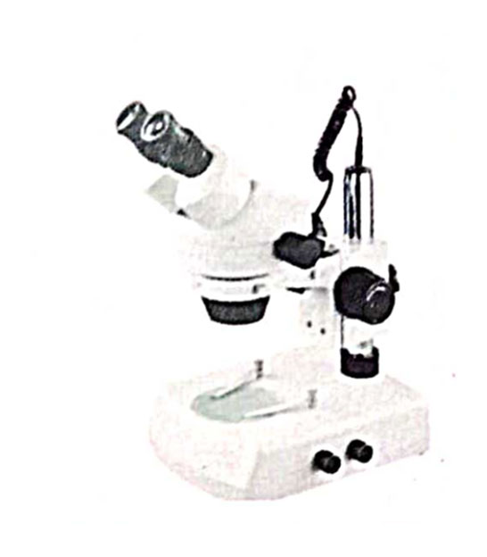

SCHOOL MICROSCOPE
An inclineable well designed Body with Metallic
Parts study Rack & pinion coarse motion sensitive
fine focusing movable condenser with E.P. 10x &
15x ob, 10x and 45x gives sharp image.

MEDICAL MICROSCOPE
A Latest design pressure Die casted Al. Parts. All
are metallic parts detachable mechanical stage
(Graduated) for slide manipulations E. P. 5x
wf-10x ob. 10x, 45x and 100x oil immersion gives
clear & sharp image.
PROJECTION MICROSCOPE
Projection Microscope is a versatile instrument
of universal applications designed for all stages
of demonstration, measurements, checking,
counting & comparison in Science Lab, Textile
Production, Medical and Agricultural Fields. It's
compact, dust proof construction, light weight,
functional design & quality optical components
make it a useful instrument in the respective
field.

STUDENT MICROSCOPE
Monocular laboratory microscope with 45°
inclined monocular head, quadruple nosepiece,
achromatic objectives 4x-10x and 40xsl,
huygenian eyepieces 5x-6x-10x-15x or 16x
(any three)

MONOCULAR RESEARCH MICROSCOPE
RESEARCH Si-Tec Monocular laboratory
Microscope with Monocular Head inclined 45°
rotatable through 360° detachable mech. Stage
E.P. 5x wf-10x ob. 10x 45x & 100x oil immersion
gives clear and sharp image.

TRINOCULAR RESEARCH MICROSCOPE
Trinocular coaxial Microscope assembled with
bloomed prisms ball bearing quadruple nose
piece. Built in coaxial Mech. Stage coaxial coarse
& fine focusing E.P. H 5x, wf-10 (Paired) ob. 4x,
10x 40x and 100x oil immersion gives sharp and
errect Image of the specimen.
BINOCULAR RESEARCH MICROSCOPE
A most modern latest design coaxial Microscope
head (Multilayer coated prisms) Rotatable 360°
built in coaxial (Ball Bearing) mech stage. Coaxial
coarse and fine focusing quick change bulb. Twin
door system below the base.

UPRIGHT METALLURGICAL MICROSCOPE
RESEARCH RIM-I With plan achromatic objective
with long working distance (no cover glass) & wide-
field eyepieces, can get clear pictures & wide view
field. With large move range mechanical stages, can
move quickly and slowly.
UNIVERSAL TRINOCULAR MICROSCOPE
We are known as one of the leading
manufacturers of metallurgical microscopes. The
robust structure, accurate results easy operation
makes "RESEARCH Si-Tec RIM IV" outshine the
rest in its category
INDUSTRIAL INSPECTION METALLURGICAL MICROSCOPE
"RESEARCH Si-Tec"-RIM-V with 30° inclined 360°
rotatable trinocular head & Quadruple Nosepiece,
works on the Hand-push fast movement
mechanism which is helpful in getting accurate
results.
INVERTED METALLURGICAL MICROSCOPE
It is widely used in observation & analysis of
metallurgical organization in Mechanical industry,
Research of Geological & Mineral department
and viewing & measuring crystal, integrate circuit,
micro-electronics, etc in Electronic industry. It is
the first choice of Factories, Academy, Scientific
research organization.

BINOCULAR STEREO MICROSCOPE
"RESEARCH Si-Tec" RIS-I with Binocular head
inclined at 45-deg., rotated through 360-deg
with adjustable inter-pupillary distance &
Standard magnification 20X & 40X wide field
for smoother & sharper image.
BINOCULAR ZOOM STEREO MICROSCOPE
RIZ-II-A Binocular Zoom Stereo Microscope for
Industry Use or Research Use. Binocular Head
Inclined at 45 degree.MAG. 7x-45x. Designed
to suit your needs.

ADVANCE STEREO SCOPIC DISSECTING ZOOM MICROSCOPE
A wide field inclined stereo head rotatable through
360° having incident and base illumination to
Inspect the specimen. Its specially designed for
Research and Industries.
TRINOCULAR ZOOM STEREO MICROSCOPE
An integral part of "RESEARCH Si-Tec" Zoom
stereo microscopes. Assembled with errect glass
& hard bloomed optical combination which gives
sharp & errect image. Flat field continuously
variable, Mag. 5x to 180x depending upon the eye
pieces & supplementary lens.
STUDENT POLARISING MICROSCOPE
A standard polarising microscope suitable to study
the optical properties of natural elements/
compounds like quartz, Calacite, Mica, Marbles etc
& optical components of the above are widely
inspected by the microscope.
BINOCULAR POLARISING MICROSCOPE
(Drawtubes: Monocular, Trinocular available)
An advanced polarising microscope most versatile
for use in mineralogy, Geochemistry, Petrology &
various industries. i.e. Glass, chemical, ceramic,
brandies of biology in studying polarising light.

RESEARCH POLARISING MICROSCOPE
Research Polarising Microscope is a principal
piece of equipment used by the Geologists to
observe the optical properties of minerals. It
has indispensable applications for petrography,
crystallography, geology, mineralogy, ceramics,
toxicology, chemical microscopy or detecting
defects in semi-conductors, finding stress points
in metals, glass & textiles etc.
FLUORESCENCE MICROSCOPE
RIF -I Five waveband Fluorescence Microscope is
made up of the Biological microscope and
Epi-fluorescence device. Epi-fluorescence is widely
used in biology, medicine, immunology, oncology,
genetics, materials. Science & other fields.
Conventional configuration has 5 wave bands, and
B,G,BV,V,U can be switched, & meanwhile, the
conventional transmission observation can be
proceeded. High-quality optical system and
fluorescent attachment make you observe the
satisfactory fluorescent effect. It is your best choice
because of humanized configuration design,
convenient operation system & novel appearance.
INVERTED FLUORESCENCE MICROSCOPE
RIF- I1 Inverted Reflected Fluorescence
Microscope is composed with inverted
microscope and reflected fluorescence
microscope, equipped with long working
distance plan achromatic objectives and
wide field eyepieces, you can use long
working distance phase contrast objectives
and special long working distance condenser
with phase contrast unit when inverted
observation, and change the fluorescence
excitation system freely.

LENSO METER
A light weight compact lens meter having
accurate reading 0 to 20 precise lens analysis
equipped with wide eye point eye piece,
provides accurate external reading.
KERATOMETER
Based on boarch lamb pattern and fitted on highly
versatile manageable long motion stand, high
sophisticated optical measurement & bearing of
the cornia.

MEDICO CENTRIFUGAL
Designed for: Small capacity centrifuging
requirements of medical practitioners, Pathological
tests, the unit is filled with Resilitnely mounted
motor for vibration free performance having built
in 5 step speed regulator.
DOUBLE WEDGE SACCHARIMETER
Saccharimeter for use in the cane, beet and sugar
related industries. Its specially designed for
sugar factories. Double wedge Compensations
workable on white light.

INCLINED RESEARCH POLARIMETER 220MM
A high quality sensitive polarimeter designed
on Lourents half shade and biquards system
for most accurate results. Equipped with
Precisely graduated scale capable of rotation
and divided in single degree's vernier reading
to 1/10.

ABBES REFRECTOMETER
A most modern and accurate abbes
refrectometer having range of measurement:-
-nD 1.3000-1.7000
Scale reading
‡.001 and .0001 By estd.
Sugar scale 0.95%
Dispersion nD 0.0005
Scale reading
‡.001 and .0001 By estd.
Sugar scale 0.95%
Dispersion nD 0.0005

TRAVELING MICROSCOPE
Traveling microscopes are specially designed to
meet the requirements of Research, colleges,
schools and Industrial laboratories. They are
used for accurate measurement of the diameters
of wool and nylon. They are also used in Physics
Laboratories for more accurate determination of
small variations in the liquid levels and
manometers.

ADVANCE ROTARY MICROTOME
A unique and latest sectioning equipments feed
setting with cam drive system ranging from
1 to 50 microns in step of 1 micron each
complete in wooden box with all accessories.
ROTARY MICROTOME
A standard Rotary microtome with sturdy metal
cover enclosed the internal mechanism range 1 to
25 micron in step of 1 micron each. Supplied with
accessories in wooden cabinet.

OVER HEAD PROJECTOR
- Metal and Plastic mixed body, sturdy and high
quality.
- Quiet cooling system with fan.
- Advanced projection image with color fringing adjustment.
- Folding post
- Quiet cooling system with fan.
- Advanced projection image with color fringing adjustment.
- Folding post
PORTABLE OVERHEAD PROJECTOR
Aluminium vapor, quartz-protected surface, for
vertical projection, tile up to 30.
8. High-speed Lamp Changing System: Handy
knob, supported by 2 micro safety switches.
Projection Stage: 285mmx285mm, suitable for
A4 transparency 2. Power Source:
220V/230V/240V, 50Hz, (Optional 110V,60Hz